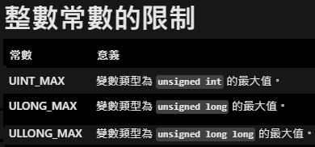

進制轉換 (進階題)
將給定進制的無號數字轉換為指定進制,輸入及輸出使用 0~9 及 A~F 表示,其中 A~F 相當於十進位的 10~15。

進制轉換 (進階題)
進制轉換 (進階題)

Tips
Tips
// 將待轉換數字的進制整數按權值展開後轉換為十進制整數
for (int i = 0; number[i] != '\0'; i++) // '\0'在c語言中代表著字串的結束
{
// 檢查輸入是數字還是字母
if(number[i] >= '0' && number[i] <= '9')
{
// 檢查轉換數字與進制是否矛盾
if(number[i] - '0' >= before_radix)
{
???
}
else
num = num * before_radix + number[i] - '0';
}
else
{
if(number[i] - 'A' + 10 >= before_radix)
{
???
}
else
???
}
}
for迴圈
#include <stdio.h>
int main()
{
char s[] = "Hello";
for(int i = 0; i < 10; i++) // for(初始變數; 判斷式; 遞增式){}
{
printf("%d ", i);
}
printf("\n");
for(int i = 0; s[i] != '\0'; i++)
{
printf("%c ", s[i]);
}
return 0;
}
0 1 2 3 4 5 6 7 8 9
H e l l o
ASCII
字母a、b、C、D...以及數字0、1...還有一些常用的符號（例如*、#、@...）在電腦中儲存時也要使用二進位數來表示，而具體用哪些二進位數字表示哪個符號，這就是編碼。如果不同的電腦要想互相通信而不造成混亂，那麼每台電腦就必須使用相同的編碼規則，於是美國有關的標準化組織就推出了ASCII編碼。
bool
C 語言標準(C89) 沒有定義布林類型，如果你使用 true 和 false，會出現錯誤。
C99 有提供一個標頭檔
#include <stdio.h>
#include <stdbool.h>
int main() {
bool error = true; // 可改寫為 bool error = 1;
if(error == false)
printf("0");
else
printf("1");
return 0;
}
資料型態
注意：以下是典型的資料位長和範圍。編譯器可能使用不同的資料位長和範圍。
請參考具體的參考。

資料型態
標準標頭檔<llimits.h> 中說明了基礎資料的長度

#include <stdio.h>
#include <limits.h>
int main() {
printf("The max value ot type unsigned is %u\n", UINT_MAX);
printf("The max value of type unsigned long is %lu\n", ULONG_MAX);
printf("The max value of type unsigned long long is %llu\n", ULLONG_MAX);
return 0;
}
The max value ot type unsigned is 4294967295
The max value of type unsigned long is 18446744073709551615
The max value of type unsigned long long is 18446744073709551615
C語言基本使用
宣告變數 - int i=0; //資料型別 變數名稱 初始值
常見資料型別 - int, float, char, bool, ...etc. //整數，浮點數，字元，布林型態
條件判斷 - if(i>0){ }else{ } //o11-2提示有更詳細說明
迴圈 - for(int i=0;i<10;i++){ } while(i<10){ } do{ }while(i<10); //o11-2有後兩種說明
C語言基本使用
變數名稱要有意義，為了將來方便閱讀
寫完一句程式記得用分號(;)結尾
NG - 避免使用全域變數，這會造成程式可讀性下降以及出錯率大幅提高
全域變數 - 指在所有函式外定義的變數，這種變數的作用範圍是整個程式
避免無窮迴圈，注意迴圈的條件式設定
避免巢狀結構，如for迴圈當中還有多層for迴圈
陣列
用來儲存相同資料型態的變數。
陣列的索引值從0開始。
請參考以下的說明圖示。

陣列
以下是陣列的使用範例，說明陣列宣告及賦予陣列元素初始值。
#include <stdio.h>
int main(){
char arr1[10]; //宣告一長度為10，元素型別為char的陣列arr1
int arr2[3] = {0, 1, 2}; //宣告一長度為3，元素型別為int的陣列arr2，並一併賦初始值
for(int i=0;i<10;i++){ //賦予arr1的陣列元素初始值，並列印每個元素的初始值
arr1[i] = i + '0';
printf("%c ", arr1[i]);
}
printf("\n");
for(int i=0;i<3;i++){ //列印arr2每個元素的初始值
printf("%d ", arr2[i]);
}
return 0;
}
0 1 2 3 4 5 6 7 8 9
0 1 2
進制介紹
一種進制中可以使用的數字符號的數目，稱為這種進位制的 基數 或 底數。
若一個進位制的基數為 n ，即可稱之為 n 進制。
現在最常用的進制是十進制，這種進制使用10個阿拉伯數字（0-9）進行記數。
我們可以用不同的進制來表示同一個數，例如：
57(10) = 111001(2) = 212(5) = 71(8) = 49(12) = 39(16)
解答P1
首先來寫主函式
先來定義變數
定義字元陣列來存放使用者輸入的待轉換數字
定義字元陣列來存放十進制整數除指定的轉換進制的餘數
定義int來存放使用者輸入的待轉換數字的進制
定義int來存放使用者輸入的指定的轉換進制
#include <stdio.h>
#include <stdbool.h>
int main()
{
char number[16]; // 存待轉換數字
char converted_number[30]; // 存十進制整數除指定的轉換進制的餘數
int before_radix; // 待轉換數字的進制
int after_radix; // 指定的轉換進制
int count = 0;
unsigned long long num = 0; // 轉換後的十進制整數
bool error = false;
char table[17] = "0123456789ABCDEF";
解答P2
讓使用者輸入待轉換數字
// 輸入待轉換數字
printf("請輸入待轉換數字 : ");
scanf("%s",number);
// 輸入待轉換數字的進制(2~16)
printf("待轉換數字的進制(2~16) : ");
scanf("%d", &before_radix);
// 輸入指定的轉換進制(2~16)
printf("輸入指定的轉換進制(2~16) : ");
scanf("%d", &after_radix);
解答P3
判斷待轉換數字的進制和指定的轉換進制是否在2~16內
若不是則判斷有錯，令用於判斷的bool值error等於true
// 判斷待轉換數字的進制和指定的轉換進制是否在2~16內
if(before_radix < 2 || before_radix > 16 || after_radix < 2 || after_radix >16)
{
error = true;
}
解答P4
若待轉換數字的進制和指定的轉換進制在2~16內
將待轉換數字的進制整數按索引值展開後轉換為十進制整數
因為輸入字元可能大於1，所以寫for迴圈一個字元一個字元檢查
利用ASCII碼判斷字元是數字或字母，以及其與進制是否矛盾
解答P5
若剛才判斷時出現矛盾進制則印出ERROR
if(error == true)
{
printf("ERROR");
}
解答P6
若不是矛盾進制則進行進制轉換
十進制整數採用“除 指定的轉換進制 取餘”轉換為指定的轉換進制整數
轉換完後將字串converted_number反轉後輸出
程式結束